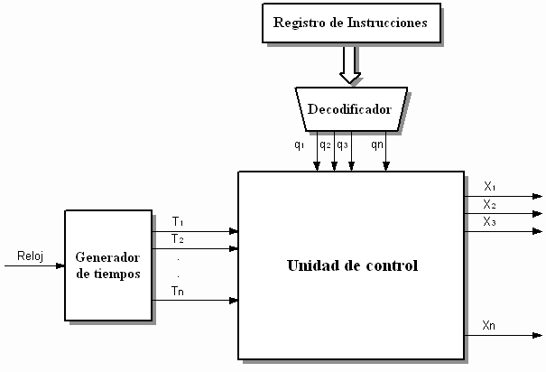
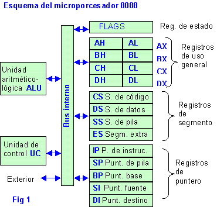

Los componentes de la CPU son:
✸ Unidad aritmético lógica (ALU): realiza operaciones aritméticas (suma, resta) y lógicas (SI, Y, O, NO) entre los valores de los argumentos (uno o dos) .
✸ Unidad de control (CU): Su función es buscar las instrucciones en la memoria principal, decodificarlas (interpretación) y ejecutarlas, empleando para ello la unidad de proceso.
Existen dos tipos de unidades de control: las cableadas, usadas generalmente en máquinas sencillas, y las microprogramadas, propias de máquinas más complejas. En el primer caso, los componentes principales son el circuito de lógica secuencial, el de control de estado, el de lógica combinacional y el de emisión de reconocimiento de señales de control. En el segundo caso, la microprogramación de la UC se encuentra almacenada en una micromemoria, a la cual se accede de manera secuencial para posteriormente ir ejecutando cada una de las microinstrucciones.

✸ Registros internos: el término es usado generalmente para referirse al grupo de registros que pueden ser directamente indexados como operandos de una instrucción, como está definido en el conjunto de instrucciones. Sin embargo, los microprocesadores tienen además muchos otros registros que se usan con un propósito específico, como el contador de programa.
